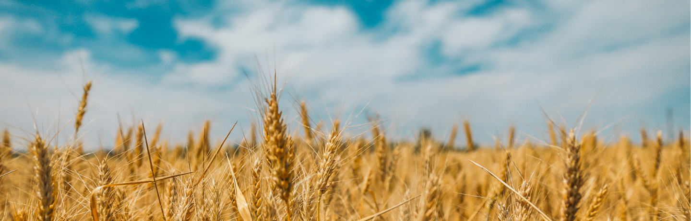

Quiz
É mais fácil aprender quando você está se divertindo!
Escolha um dos quiz abaixo:
AgroDesafios
Teste seus conhecimentos sobre solo, plantio, colheita e os caminhos da exportação e importação.
10 perguntas | 5 min
AgroGlobal
Teste seus conhecimentos sobre solo, plantio, colheita e os caminhos da exportação e importação.
6 perguntas | 6 min
 Sobre nós
Sobre nós Documentos
Documentos (11) 98954-2349
(11) 98954-2349 farmedcontato@gmail.com
farmedcontato@gmail.com